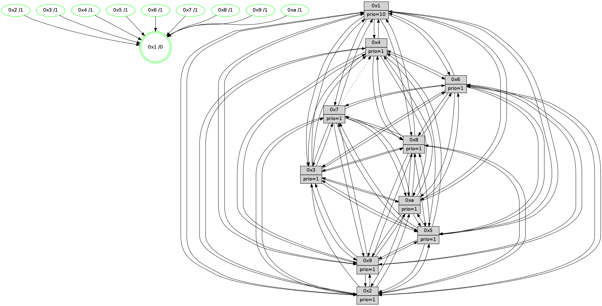

>> << IDX [start] -100 -25 -5 +0 +5 +25 +100 [1445.07266498]
 Previous packets
----------------------------------------------------------------------
1440.343875 beacon01(faad) #0 coord=01,02,03,04,05,06,07,0a,09,08 cycle=688.0ms assoc
-- color-indic=1 64 35 eb
1440.353857 beacon02(faad) #0 coord=01,02,03,04,05,06,07,0a,09,08 cycle=688.0ms assoc 64 a6 da
1440.363857 beacon03(faad) #0 coord=01,02,03,04,05,06,07,0a,09,08 cycle=688.0ms assoc 64 dc 97
1440.373857 beacon04(faad) #0 coord=01,02,03,04,05,06,07,0a,09,08 cycle=688.0ms assoc 64 ab 7d
1440.383858 beacon05(faad) #0 coord=01,02,03,04,05,06,07,0a,09,08 cycle=688.0ms assoc 64 d1 30
1440.393858 beacon06(faad) #0 coord=01,02,03,04,05,06,07,0a,09,08 cycle=688.0ms assoc 64 5f e7
1440.403859 beacon07(faad) #0 coord=01,02,03,04,05,06,07,0a,09,08 cycle=688.0ms assoc 64 25 aa
1440.413862 beacon0a(faad) #0 coord=01,02,03,04,05,06,07,0a,09,08 cycle=688.0ms assoc 64 54 a1
1440.433864 beacon08(faad) #0 coord=01,02,03,04,05,06,07,0a,09,08 cycle=688.0ms assoc 64 a0 3b
1440.445983 [Hello(10): seq=851 sym=6,2,3,8,7,5,9,4,1 sysInfo=hasWarning stat=6:13,0,4,5/2:9,9,8,1/3:14,8,13,15/8:0,8,5,4/7:7,15,3,10/5:5,14,1,2/9:9,14,4,1/4:13,7,15,3/1:8,4,10,1]
1440.448819 [STC(10)->1 #0.250 tree-change,inconsistent-stability,stable,to-color d=1]
1440.450746 [STC(2)->1 #0.250 tree-change,inconsistent-stability,stable,to-color d=1]
1440.452015 [Hello(8): seq=862 sym=5,2,3,7,9,6,4,10,1 sysInfo=hasWarning stat=5:2,12,10,2/2:11,10,4,13/3:4,11,10,4/7:0,3,0,0/9:0,14,12,5/6:11,10,4,0/4:15,12,5,2/10:15,13,2,5/1:6,0,14,0]
1440.454997 [STC(6)->1 #0.250 tree-change,inconsistent-stability,stable,to-color d=1]
1440.457446 [Color(1) seq=598 @0:0 prio=10]
1440.458731 [Hello(9): seq=862 sym=2,5,3,4,7,6,8,10,1 sysInfo=hasWarning stat=2:12,5,4,12/5:14,12,4,9/3:8,9,15,4/4:8,4,11,3/7:5,14,11,5/6:12,11,2,15/8:6,12,10,7/10:0,6,7,0/1:8,3,13,1]
1440.461553 [Hello(4): seq=918 sym=5,8,6,2,3,9,10,1 sysInfo= stat=5:1,8,12,3/8:0,1,0,0/6:11,1,6,0/2:6,2,14,2/3:9,13,7,15/9:15,6,2,2/10:2,14,7,14/1:0,10,14,1]
1440.463918 [STC(9)->1 #0.250 tree-change,inconsistent-stability,stable,to-color d=1]
1440.465224 [STC(3)->1 #0.250 tree-change,inconsistent-stability,stable,to-color d=1]
1440.466488 [STC(4)->1 #0.250 tree-change,inconsistent-stability,stable,to-color d=1]
1440.469076 [Hello(7): seq=918 sym=2,3,5,6,4,9,10,1 asym=8 sysInfo=hasWarning stat=2:0,0,13,5/3:8,7,0,3/5:6,9,0,4/6:7,4,13,12/4:11,11,10,2/9:6,7,12,2/10:4,5,5,7/1:13,5,10,0/8:4,9,1,0]
1440.471591 [TreeStatus(3)-.->1 #0.250 tree-change,inconsistent-stability,stable child=1]
1440.473223 [STC(7)->1 #0.250 tree-change,inconsistent-stability,stable,to-color d=1]
1440.474462 [Color(4) seq=457 @0:0 prio=1]
1440.479546 [STC(8)->1 #0.250 tree-change,inconsistent-stability,stable,to-color d=1]
1440.483416 [Color(8) seq=517 @0:0 prio=1]
----------------------------------------------------------------------
1441.132007 beacon01(faad) #0 coord=01,02,03,04,05,06,07,0a,09,08 cycle=688.0ms assoc
-- color-indic=1 64 f1 e5
1441.141989 beacon02(faad) #0 coord=01,02,03,04,05,06,07,0a,09,08 cycle=688.0ms assoc 64 62 d4
1441.151991 beacon03(faad) #0 coord=01,02,03,04,05,06,07,0a,09,08 cycle=688.0ms assoc 64 18 99
1441.161991 beacon04(faad) #0 coord=01,02,03,04,05,06,07,0a,09,08 cycle=688.0ms assoc 64 6f 73
1441.171990 beacon05(faad) #0 coord=01,02,03,04,05,06,07,0a,09,08 cycle=688.0ms assoc 64 15 3e
1441.181991 beacon06(faad) #0 coord=01,02,03,04,05,06,07,0a,09,08 cycle=688.0ms assoc 64 9b e9
1441.191991 beacon07(faad) #0 coord=01,02,03,04,05,06,07,0a,09,08 cycle=688.0ms assoc 64 e1 a4
1441.201994 beacon0a(faad) #0 coord=01,02,03,04,05,06,07,0a,09,08 cycle=688.0ms assoc 64 90 af
1441.221998 beacon08(faad) #0 coord=01,02,03,04,05,06,07,0a,09,08 cycle=688.0ms assoc 64 64 35
1441.235183 [Hello(1): seq=828 sym=4,2,9,5,10,3,8,6,7 sysInfo=coloring-mode-on,ColoringModeRequestCalled stat=4:6,7,15,4/2:9,14,8,6/9:4,13,10,2/5:5,8,12,10/10:9,2,12,8/3:15,13,12,11/8:3,0,10,4/6:14,8,9,2/7:3,1,1,2]
1441.237914 [Color(10) seq=508 @0:0 prio=1]
1441.239499 [Hello(2): seq=915 sym=4,5,7,6,3,9,8,10,1 sysInfo=hasWarning stat=4:4,13,13,14/5:5,12,3,3/7:3,11,0,2/6:5,8,2,1/3:8,0,3,1/9:3,14,10,10/8:3,10,9,13/10:1,5,9,11/1:14,7,9,0]
1441.243922 [Color(2) seq=495 @0:0 prio=1]
1441.247913 [Hello(5): seq=919 sym=7,6,4,3,1,9,8,10,2 sysInfo=hasWarning stat=7:3,0,3,1/6:15,6,0,5/4:9,6,10,0/3:1,5,15,3/1:5,13,5,0/9:6,11,2,11/8:7,14,9,5/10:5,9,8,9/2:6,5,14,8]
1441.251114 [Hello(3): seq=919 sym=1,7,6,2,4,8,9,10,5 sysInfo=hasWarning stat=1:4,3,1,0/7:4,9,2,15/6:3,3,8,3/2:2,7,2,1/4:12,2,4,14/8:13,10,10,6/9:4,11,13,1/10:0,6,3,5/5:13,3,2,2]
1441.254430 [Color(6) seq=551 @0:0 prio=1]
1441.256200 [Color(3) seq=548 @0:0 prio=1]
1441.262822 [Color(5) seq=455 @0:0 prio=1]
----------------------------------------------------------------------
1441.920138 beacon01(faad) #0 coord=01,02,03,04,05,06,07,0a,09,08 cycle=688.0ms assoc
-- color-indic=1 64 4d e0
1441.930121 beacon02(faad) #0 coord=01,02,03,04,05,06,07,0a,09,08 cycle=688.0ms assoc 64 de d1
1441.940120 beacon03(faad) #0 coord=01,02,03,04,05,06,07,0a,09,08 cycle=688.0ms assoc 64 a4 9c
1441.950120 beacon04(faad) #0 coord=01,02,03,04,05,06,07,0a,09,08 cycle=688.0ms assoc 64 d3 76
1441.960121 beacon05(faad) #0 coord=01,02,03,04,05,06,07,0a,09,08 cycle=688.0ms assoc 64 a9 3b
1441.970122 beacon06(faad) #0 coord=01,02,03,04,05,06,07,0a,09,08 cycle=688.0ms assoc 64 27 ec
1441.980121 beacon07(faad) #0 coord=01,02,03,04,05,06,07,0a,09,08 cycle=688.0ms assoc 64 5d a1
1441.990127 beacon0a(faad) #0 coord=01,02,03,04,05,06,07,0a,09,08 cycle=688.0ms assoc 64 2c aa
1442.010126 beacon08(faad) #0 coord=01,02,03,04,05,06,07,0a,09,08 cycle=688.0ms assoc 64 d8 30
1442.021356 [Hello(10): seq=852 sym=6,2,3,8,7,5,9,4,1 sysInfo=hasWarning stat=6:14,1,5,5/2:9,10,9,1/3:15,9,14,15/8:1,9,6,4/7:8,0,4,10/5:6,15,1,2/9:10,14,5,1/4:14,8,0,3/1:9,5,10,1]
1442.024360 [Hello(9): seq=863 sym=2,5,3,4,7,6,8,10,1 sysInfo=hasWarning stat=2:13,6,4,12/5:15,13,4,9/3:9,10,0,5/4:8,5,12,3/7:6,14,12,5/6:12,12,2,0/8:6,13,11,7/10:0,6,7,0/1:9,3,13,1]
1442.028035 [Hello(7): seq=919 sym=2,3,5,6,4,9,10,1 asym=8 sysInfo=hasWarning stat=2:0,1,13,5/3:9,8,0,4/5:7,10,0,4/6:8,5,13,12/4:11,12,10,2/9:6,7,12,2/10:5,6,6,7/1:14,5,10,0/8:4,10,2,0]
1442.031885 [Color(7) seq=447 @0:0 prio=1]
1442.033285 [Color(1) seq=599 @0:0 prio=10]
1442.040598 [Hello(8): seq=863 sym=5,2,3,7,9,6,4,10,1 sysInfo=hasWarning stat=5:3,13,10,2/2:11,11,4,13/3:5,12,10,4/7:0,3,0,0/9:0,14,12,5/6:12,11,4,0/4:15,12,5,2/10:0,14,3,5/1:7,0,14,0]
1442.044052 [Color(8) seq=518 @0:0 prio=1]
1442.048739 [Hello(4): seq=919 sym=5,8,6,2,3,9,10,1 sysInfo= stat=5:2,9,12,3/8:0,2,1,0/6:11,2,6,1/2:7,3,14,2/3:10,14,7,15/9:15,7,2,2/10:3,14,8,14/1:1,10,14,1]
1442.051741 [Color(4) seq=458 @0:0 prio=1]
----------------------------------------------------------------------
1442.708268 beacon01(faad) #0 coord=01,02,03,04,05,06,07,0a,09,08 cycle=688.0ms assoc
-- color-indic=1 64 99 d5
1442.718252 beacon02(faad) #0 coord=01,02,03,04,05,06,07,0a,09,08 cycle=688.0ms assoc 64 0a e4
1442.728251 beacon03(faad) #0 coord=01,02,03,04,05,06,07,0a,09,08 cycle=688.0ms assoc 64 70 a9
1442.738252 beacon04(faad) #0 coord=01,02,03,04,05,06,07,0a,09,08 cycle=688.0ms assoc 64 07 43
1442.748253 beacon05(faad) #0 coord=01,02,03,04,05,06,07,0a,09,08 cycle=688.0ms assoc 64 7d 0e
1442.758251 beacon06(faad) #0 coord=01,02,03,04,05,06,07,0a,09,08 cycle=688.0ms assoc 64 f3 d9
1442.768252 beacon07(faad) #0 coord=01,02,03,04,05,06,07,0a,09,08 cycle=688.0ms assoc 64 89 94
1442.778256 beacon0a(faad) #0 coord=01,02,03,04,05,06,07,0a,09,08 cycle=688.0ms assoc 64 f8 9f
1442.798256 beacon08(faad) #0 coord=01,02,03,04,05,06,07,0a,09,08 cycle=688.0ms assoc 64 0c 05
1442.810150 [Hello(1): seq=829 sym=4,2,9,5,10,3,8,6,7 sysInfo=coloring-mode-on,ColoringModeRequestCalled stat=4:7,8,15,4/2:10,15,8,6/9:5,13,10,2/5:6,9,12,10/10:10,3,12,8/3:0,14,12,11/8:4,1,10,4/6:14,9,9,2/7:3,1,1,2]
1442.813730 [Color(9) seq=479 @0:0 prio=1]
1442.815222 [Hello(2): seq=916 sym=4,5,7,6,3,9,8,10,1 sysInfo=hasWarning stat=4:5,14,13,14/5:6,13,3,3/7:4,12,0,2/6:5,9,2,1/3:9,1,3,1/9:4,14,10,10/8:4,11,9,13/10:2,5,9,11/1:15,8,9,0]
1442.819162 [Hello(6): seq=920 sym=3,2,5,4,7,9,8,10,1 sysInfo=hasWarning stat=3:5,14,5,0/2:8,0,5,1/5:10,7,9,5/4:8,11,13,9/7:14,13,10,0/9:10,11,1,11/8:6,4,4,7/10:9,3,9,13/1:9,9,14,1]
1442.822387 [Hello(5): seq=920 sym=7,6,4,3,1,9,8,10,2 sysInfo=hasWarning stat=7:4,1,3,1/6:15,6,0,5/4:10,7,10,0/3:1,5,15,3/1:6,14,5,0/9:7,11,2,11/8:8,15,9,5/10:6,9,8,9/2:6,5,14,8]
1442.826153 [Color(5) seq=456 @0:0 prio=1]
1442.829264 [Hello(3): seq=920 sym=1,7,6,2,4,8,9,10,5 sysInfo=hasWarning stat=1:5,4,1,0/7:5,10,2,15/6:3,3,8,3/2:2,7,2,1/4:13,3,4,14/8:14,11,10,6/9:5,11,13,1/10:1,6,3,5/5:13,4,2,2]
1442.831853 [Color(6) seq=552 @0:0 prio=1]
1442.833521 [Color(10) seq=509 @0:0 prio=1]
1442.835943 [Color(2) seq=496 @0:0 prio=1]
1442.837984 [Color(3) seq=549 @0:0 prio=1]
----------------------------------------------------------------------
1443.496399 beacon01(faad) #0 coord=01,02,03,04,05,06,07,0a,09,08 cycle=688.0ms assoc
-- color-indic=1 64 25 d0
1443.506381 beacon02(faad) #0 coord=01,02,03,04,05,06,07,0a,09,08 cycle=688.0ms assoc 64 b6 e1
1443.516382 beacon03(faad) #0 coord=01,02,03,04,05,06,07,0a,09,08 cycle=688.0ms assoc 64 cc ac
1443.526383 beacon04(faad) #0 coord=01,02,03,04,05,06,07,0a,09,08 cycle=688.0ms assoc 64 bb 46
1443.536381 beacon05(faad) #0 coord=01,02,03,04,05,06,07,0a,09,08 cycle=688.0ms assoc 64 c1 0b
1443.546382 beacon06(faad) #0 coord=01,02,03,04,05,06,07,0a,09,08 cycle=688.0ms assoc 64 4f dc
1443.556383 beacon07(faad) #0 coord=01,02,03,04,05,06,07,0a,09,08 cycle=688.0ms assoc 64 35 91
1443.566387 beacon0a(faad) #0 coord=01,02,03,04,05,06,07,0a,09,08 cycle=688.0ms assoc 64 44 9a
1443.586388 beacon08(faad) #0 coord=01,02,03,04,05,06,07,0a,09,08 cycle=688.0ms assoc 64 b0 00
1443.597928 [Hello(10): seq=853 sym=6,2,3,8,7,5,9,4,1 sysInfo=hasWarning stat=6:14,1,5,5/2:9,11,9,1/3:15,10,14,15/8:2,10,6,4/7:9,1,4,10/5:6,15,1,2/9:11,14,5,1/4:15,9,0,3/1:10,6,10,1]
1443.602015 [Hello(4): seq=920 sym=5,8,6,2,3,9,10,1 sysInfo= stat=5:3,10,12,3/8:0,2,1,0/6:12,3,6,1/2:8,4,14,2/3:11,15,7,15/9:0,8,2,2/10:4,15,8,14/1:2,10,14,1]
1443.605044 [Hello(8): seq=864 sym=5,2,3,7,9,6,4,10,1 sysInfo=hasWarning stat=5:4,14,10,2/2:12,12,4,13/3:6,13,10,4/7:0,3,0,0/9:1,15,12,5/6:13,12,4,0/4:0,13,5,2/10:1,15,3,5/1:8,0,14,0]
1443.608188 [Color(8) seq=519 @0:0 prio=1]
1443.609963 [Color(4) seq=459 @0:0 prio=1]
1443.613649 [STC(1) #0.251 tree-change,inconsistent-stability,stable,to-color d=0]
1443.615151 [Hello(7): seq=920 sym=2,3,5,6,8,9,10,1 asym=4 sysInfo=hasWarning stat=2:1,2,13,5/3:10,9,0,4/5:8,11,0,4/6:9,6,13,12/8:5,11,2,0/9:7,8,12,2/10:6,7,6,7/1:15,6,10,0/4:12,13,10,2]
1443.618947 [Color(1) seq=600 @0:0 prio=10]
1443.620278 [Color(7) seq=448 @0:0 prio=1]
----------------------------------------------------------------------
1444.284530 beacon01(faad) #0 coord=01,02,03,04,05,06,07,0a,09,08 cycle=688.0ms assoc
-- color-indic=1 64 e1 de
1444.294512 beacon02(faad) #0 coord=01,02,03,04,05,06,07,0a,09,08 cycle=688.0ms assoc 64 72 ef
1444.304512 beacon03(faad) #0 coord=01,02,03,04,05,06,07,0a,09,08 cycle=688.0ms assoc 64 08 a2
1444.314513 beacon04(faad) #0 coord=01,02,03,04,05,06,07,0a,09,08 cycle=688.0ms assoc 64 7f 48
1444.324513 beacon05(faad) #0 coord=01,02,03,04,05,06,07,0a,09,08 cycle=688.0ms assoc 64 05 05
1444.334514 beacon06(faad) #0 coord=01,02,03,04,05,06,07,0a,09,08 cycle=688.0ms assoc 64 8b d2
1444.344514 beacon07(faad) #0 coord=01,02,03,04,05,06,07,0a,09,08 cycle=688.0ms assoc 64 f1 9f
1444.354517 beacon0a(faad) #0 coord=01,02,03,04,05,06,07,0a,09,08 cycle=688.0ms assoc 64 80 94
1444.374520 beacon08(faad) #0 coord=01,02,03,04,05,06,07,0a,09,08 cycle=688.0ms assoc 64 74 0e
1444.385511 [STC(4)->1 #0.251 tree-change,inconsistent-stability,stable,to-color d=1]
1444.387426 [STC(8)->1 #0.251 tree-change,inconsistent-stability,stable,to-color d=1]
1444.390357 [STC(9)->1 #0.251 tree-change,inconsistent-stability,stable,to-color d=1]
1444.391713 [Hello(2): seq=917 sym=4,5,7,6,3,9,8,10,1 sysInfo=hasWarning stat=4:6,15,13,14/5:6,13,3,3/7:5,13,0,2/6:5,9,2,1/3:9,2,3,1/9:4,14,10,10/8:5,12,9,13/10:3,5,9,11/1:0,9,10,0]
1444.394137 [STC(10)->1 #0.251 tree-change,inconsistent-stability,stable,to-color d=1]
1444.395353 [Color(9) seq=480 @0:0 prio=1]
1444.397644 [STC(2)->1 #0.251 tree-change,inconsistent-stability,stable,to-color d=1]
1444.399611 [Color(2) seq=497 @0:0 prio=1]
1444.402061 [Color(10) seq=510 @0:0 prio=1]
1444.403853 [Hello(5): seq=921 sym=7,6,4,3,1,9,8,10,2 sysInfo=hasWarning stat=7:5,2,3,1/6:15,7,0,5/4:11,8,10,0/3:2,6,15,3/1:7,15,6,0/9:8,11,2,11/8:9,0,9,5/10:6,10,8,9/2:6,6,14,8]
1444.407294 [STC(5)->1 #0.251 tree-change,inconsistent-stability,stable,to-color d=1]
1444.408656 [Hello(6): seq=921 sym=3,2,5,4,7,9,8,10,1 sysInfo=hasWarning stat=3:5,15,5,0/2:8,1,5,1/5:10,7,9,5/4:9,12,13,9/7:15,14,10,0/9:10,11,1,11/8:7,5,4,7/10:10,4,9,13/1:10,10,15,1]
1444.412744 [STC(6)->1 #0.251 tree-change,inconsistent-stability,stable,to-color d=1]
1444.414182 [Color(5) seq=457 @0:0 prio=1]
1444.415962 [Color(6) seq=553 @0:0 prio=1]
1444.423508 [Hello(3): seq=921 sym=1,7,6,4,8,9,10,5 sysInfo=hasWarning stat=1:6,5,2,0/7:6,11,2,15/6:3,3,8,3/4:14,4,4,14/8:15,12,10,6/9:5,11,13,1/10:2,6,3,5/5:13,4,2,2]
1444.427795 [STC(3)->1 #0.251 tree-change,inconsistent-stability,stable,to-color d=1]
1444.431345 [Color(3) seq=550 @0:0 prio=1]